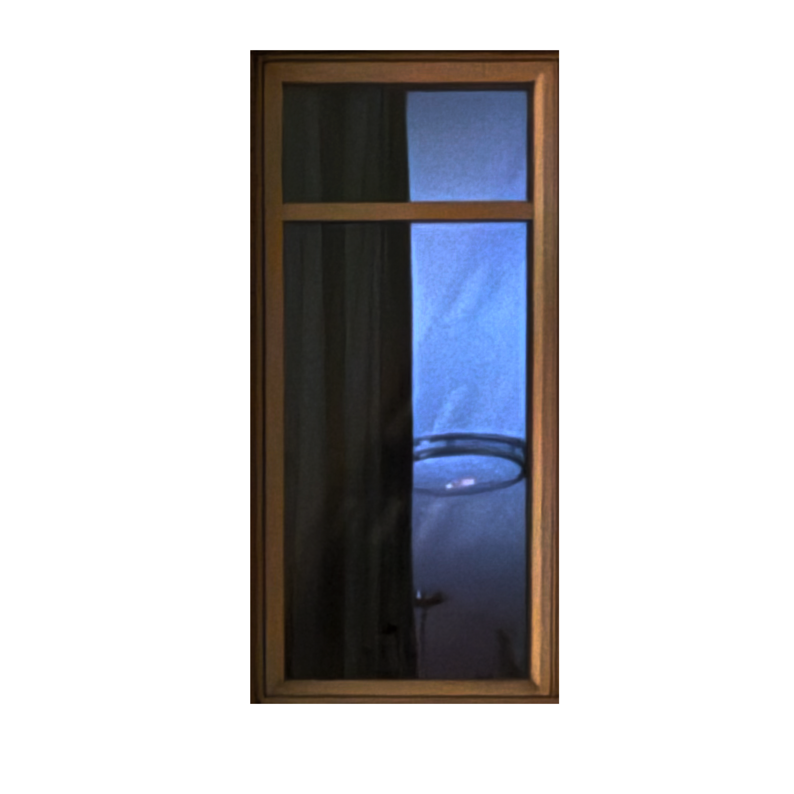

Your cursor becomes a window. Searching does not guarantee knowledge.
AN OCULAR-CENTRIC SOCIETY DESIGNS FOR THE EYE.
Architect Veronica Schreibeis Smith argues that architectural and domestic voyeurism grows from a culture centered on vision. Large glass spaces are marketed through seductive renderings and expansive views, while their psychological consequences receive far less attention.
The resident may purchase openness and prestige but also enter what Smith describes as a glass cage. The home becomes visually accessible to neighbors and strangers, and the person paying for the view is also the person being placed on display.
Architecture can therefore satisfy the eye while weakening the sense of refuge. A space that looks impressive from outside may not provide the privacy, emotional connection, or rest that a home is expected to hold.
TRANSPARENCY BECOMES A SIGNAL OF SUCCESS.
Environmental psychologist Dr. Sally Augustin notes that all-glass towers and houses often cost more and therefore communicate status. Their meaning is learned collectively: an observant culture repeatedly associates visibility, height, openness, and expense with achievement.
Residents do not only inhabit these spaces; they send messages through them. The apartment, its placement in the city, and everything visible inside can communicate taste, wealth, order, and personal priorities to a broad and largely unknown audience.
This makes architecture a form of nonverbal communication. The physical environment can appear more trustworthy than a spoken claim because furniture, cleanliness, light, and objects seem to reveal the resident without mediation.
But the message is never neutral. Transparent design turns the home into an image that can be read, compared, and judged from outside, even when no direct communication was intended.
THE DOMESTIC INTERIOR BECOMES A PERFORMANCE.
Augustin suggests that people continually arrange domestic space to communicate what matters to them. This behavior is not new, but large windows greatly expand its audience. A private room can now perform for an entire street or the neighboring tower.
Awareness of being watched changes behavior. Even subtle choices - the placement of a chair, a clean surface, the objects displayed near the glass - become part of a curated existence.
Smith warns that this visibility can redirect attention toward consumer ideals. Concern over whether the correct furniture is visible may replace the deeper work of making a home emotionally meaningful, restorative, and connected to the people who live there.
CLOSE THE CURTAINS, THEN RETHINK THE BUILDING.
Smith identifies a gap between what people have been taught to desire and what may actually support health and well-being. Advertising makes the glass house desirable, while the quieter needs for retreat, control, and emotional safety remain less visible.
Privacy is not opposed to social connection. Both are basic needs. The problem begins when buildings offer constant visibility without giving inhabitants meaningful control over when and how they appear.
Human-centered architecture must address emotional, mental, spiritual, and physical life rather than treating buildings as autonomous visual objects. Interior space is not an empty vessel for impressive possessions.
Objects, rooms, light, and boundaries shape daily experience. A home should provide a reprieve from public display, not continue the pressure to perform.

Glass communicates openness and success, but it can also turn the resident and the interior into objects of information.
A HOME SHOULD BE A PLACE OF REPOSE, NOT A CONTINUATION OF DISPLAY.